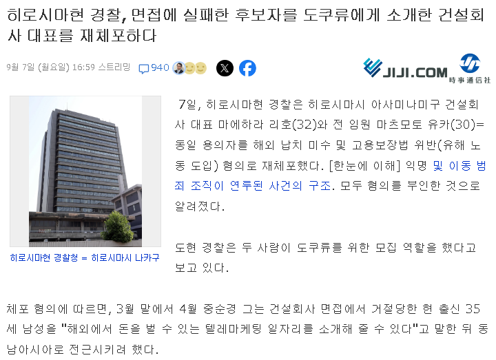

https://news.yahoo.co.jp/articles/a9fc859d71cb4510e858e1d17ea10244249c13ea
일본에서 벌어진 일이다.
알기 쉽게 설명하자면, 건설 업체 채용 면접에서 떨어진 응시자에게
'아는 회사 중에 아직 자리 남는 곳 있으니까 그쪽으로 갈래요?'
라고 말해서 속인 뒤, 응시자를 캄보디아로 팔아 넘기려 한 것.
일반 기업이 불법 조직과 연계해서 구직자를 속인 게 주목할 점.
일반인 시점에서는 의심하기 힘든 점을 노렸다는 듯.


헐 ㅅㅂ...